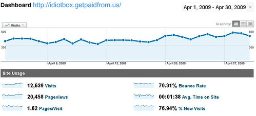
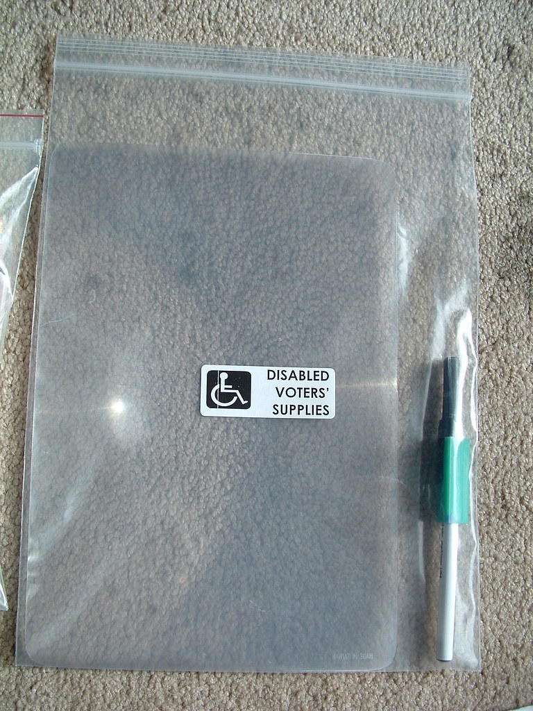

What Is Crawl Budget in SEO and How Do You Optimize It?
Learn what crawl budget means, how crawl rate limit and crawl demand shape it, how to check it in Search Console, and how to fix crawl budget waste.
A crawl budget is the number of pages search engines crawl on a site in a set time. Search engines set the limit from server strength and page demand. When you ask what is crawl budget in SEO you ask how the limit decides which pages search engines see.
Many owners publish pages and never check which pages search engines crawl. Thin pages eat the crawl time that fresh pages need. New content waits in a queue.
After this guide you will spot pages that waste your crawl time. You will fix them and point search engines to pages that bring visits. Search engines will crawl new pages faster.
Crawl Budget Sets How Much of Your Site Gets Seen
Search engines send crawlers to a site and each crawler reads pages one by one. The site server can handle only so many requests before it slows down. When you ask what is crawl budget in SEO you ask how search engines balance that load with the pages they still need to read.
A small site with a few hundred pages rarely hits its crawl limit. Search engines read the whole site in one visit and they return often. A large shop with thousands of product pages faces a real limit and the budget decides which pages get read first.
Sara runs a recipe site in Lahore and she adds three new recipes each week. Her old draft pages and tag pages filled her crawl queue for months. Sara blocked the draft pages and search engines soon started crawling her new recipes. Her new guides now show in search results sooner.
Crawl Rate Limit and Crawl Demand Shape the Budget
The crawl rate limit sets how fast search engines may request pages from a server. A weak server forces a slow rate and a strong server allows a faster rate. Search engines watch server errors and they slow the crawl when the server struggles.
Crawl demand sets how much search engines want to crawl a site. Popular pages and fresh pages draw more demand than stale pages. Search engines spend their crawl time where readers show real interest.
Omar runs a travel site in Karachi and his shared hosting slowed under heavy crawls. Search engines cut his crawl rate after his server returned errors. Omar moved to a stronger host and his server stopped returning errors. Search engines crawled his new tour pages faster.

Check Your Crawl Budget in Search Console
Search Console shows how search engines crawl a site through its crawl stats report. Owners open the report and they see how many pages get crawled each day. The report also shows the total download size and the time each crawl takes.
A sudden drop in crawled pages signals a problem with the server or with the site structure. Owners compare the crawl count with the count of new pages they published. When you ask what is crawl budget in SEO you learn why that gap points to wasted crawl time.
Ayesha manages a job board in Islamabad and her crawl count fell sharply one month. She checked the report and found her server returning errors on job pages. Ayesha fixed the server errors and her crawl count recovered in the next report. Her new job posts now reach search results sooner.
Fix Crawl Budget Waste on Low Value Pages
Low value pages eat crawl time that useful pages need. Search pages, tag pages and duplicate pages often fill the crawl queue. Owners block those pages with robots rules or they add a noindex tag to them.
A redirect chain also wastes crawl time because crawlers follow each hop in the chain. Owners fix chains by pointing old addresses straight to the final page. One direct redirect saves several crawl requests on every visit.
Bilal owns a furniture store in Faisalabad and his shop held hundreds of filter pages. Search engines crawled those filter pages and his product pages waited. Bilal blocked the filter pages with a robots rule. Search engines then crawled his product pages and his chairs started showing in search results How to Block Low Value Pages With Robots.txt.
Help Search Engines Crawl the Pages That Count
A clean sitemap lists the pages that deserve a crawl and it leaves out the rest. Owners update the sitemap when they publish a new page. Search engines read the sitemap and they visit the listed pages first.
Internal links guide crawlers from strong pages to new pages. A link from the home page tells search engines that a new page holds value. Owners link each new page from a related page that already draws visits.
Hira runs a coaching site in Multan and she publishes a new course guide each month. She adds each guide to her sitemap and she links it from her home page. Search engines find her new guides on the next crawl. Her course pages now draw visits from searchers who want her lessons.

Frequently Asked Questions
What is crawl budget in simple terms?
A crawl budget is the number of pages that search engines crawl on a site in a set time. Owners who ask what is crawl budget in SEO learn that the limit comes from server strength and page demand. Small sites rarely hit the limit and large sites manage it with care.
Does every site need to worry about crawl budget?
Small sites with a few hundred pages rarely face a crawl limit because search engines read the whole site in one visit. Large shops and news sites with thousands of pages feel the limit first. Owners check their crawl stats before they spend time on crawl fixes.
What is the difference between crawl budget and crawl rate limit?
Crawl budget names the total pages that search engines crawl on a site in a set time. Crawl rate limit names how fast search engines may request those pages from the server. The rate limit guards the server and the budget covers the pages that get read.
What is crawl demand in SEO?
Crawl demand names how much search engines want to crawl a site based on reader interest and page freshness. Popular pages and new pages draw more demand than stale pages. Search engines spend their crawl time where readers show real interest.
How do owners check crawl budget in Search Console?
Owners open the crawl stats report in Search Console and they read the count of pages crawled each day. The report shows the total download size and the time each crawl takes. A sudden drop in the count points to a server problem or a site structure problem.
Which pages waste crawl budget most?
Filter pages, search result pages, tag pages and duplicate pages waste the most crawl time. Redirect chains waste crawl time too because crawlers follow each hop in the chain. Owners block those pages or fix the chains to free the budget for useful pages.
Can a fast server raise crawl budget?
A strong server lets search engines raise the crawl rate because the server handles requests without errors. A faster rate means more pages get crawled in the same time. Owners still need to block low value pages because speed alone never fixes a bloated crawl queue.
How long does a crawl budget fix take to show results?
Search engines need time to crawl the site again and read the new rules. Owners watch the crawl stats report after a few crawls to see the count change. A full check takes patience because crawls run on the search engine schedule, not on the owner schedule.
Check your crawl budget this week and learn what is crawl budget in SEO by watching which pages search engines crawl. Block the pages that waste crawl time and link to the pages that bring visits. A clean crawl path helps your new pages reach search results sooner.
Check your crawl budget in Search Console today.
How to Fix Crawl Errors in Search Console
Related articles
- What Is the Difference Between SEO and SEM, and Which One Should You Choose?
- What Are Dofollow and Nofollow Links in SEO and When Do You Use Each?
- How SaaS Companies Use User Reviews to Win Search Traffic and Signups